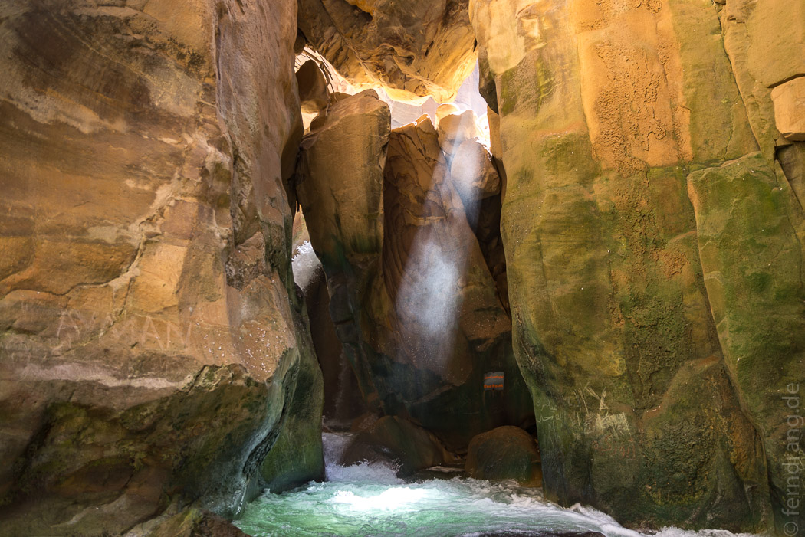

21/09/2016
Wadi Mujib
Ein weiteres Mal sind wir durch die Berge zum Toten Meer herunter gefahren. Wir wollten zum Wadi Mujib. Dort hat ein Flüsschen einen Siq in den Fels geschnitten – eine Schlucht, die nur wenige Meter breit ist. Weit über unseren Köpfen berühren sich die Wände fast. Der Weg führt durch den Fluss, anfangs nur knöcheltief, später steht man bis zur Brust im Wasser. Die Wände leuchten braunrot, wo sich die Sonne einen Weg in die Schlucht bahnt. An anderen Stellen ist der Stein gemasert wie Holz. Die gewundene Schlucht bietet immer wieder spektakuläre Perspektiven. Gegen Ende der Flusswanderung müssen wir uns an Seilen und Leitern über Stromschnellen und kleine Katarakte hochziehen, bis der Weg durch einen hohen Wasserfall endgültig blockiert ist. Klitschnass und sehr begeistert kommen wir zurück und lassen uns in der Sonne trocknen.
Um nach Mukawir zu kommen, wo wir unsere Schuhe durch einen Spaziergang in der staubtrockenen Hitze trocknen wollten, haben wir mal einen anderen Weg durch das Küstengebirge genommen. Diese Straße ist kleiner und in viel schlechterem Zustand als die Hauptstraße. Unser Auto musste einen Schlagloch-Slalom im ersten Gang absolvieren und wäre fast im Sand steckengeblieben. Letztlich haben wir es aber zu den Ruinen des Tempels des Herodes geschafft, von dem so gut wie nichts übrig geblieben ist. Inmitten der öden Gipfel führt ein Weg spiralförmig auf einen Kegel hinauf, der schnell erklommen ist. Im Tal sieht man Beduinenzelte. Auf der Rückseite kann man sich etwas den Hang herab mühen und landet auf Hirtenpfaden, denen man über einige Bergrücken Richtung Meer folgen kann. Die Stille und Leere Jordaniens ist immer wieder faszinierend.